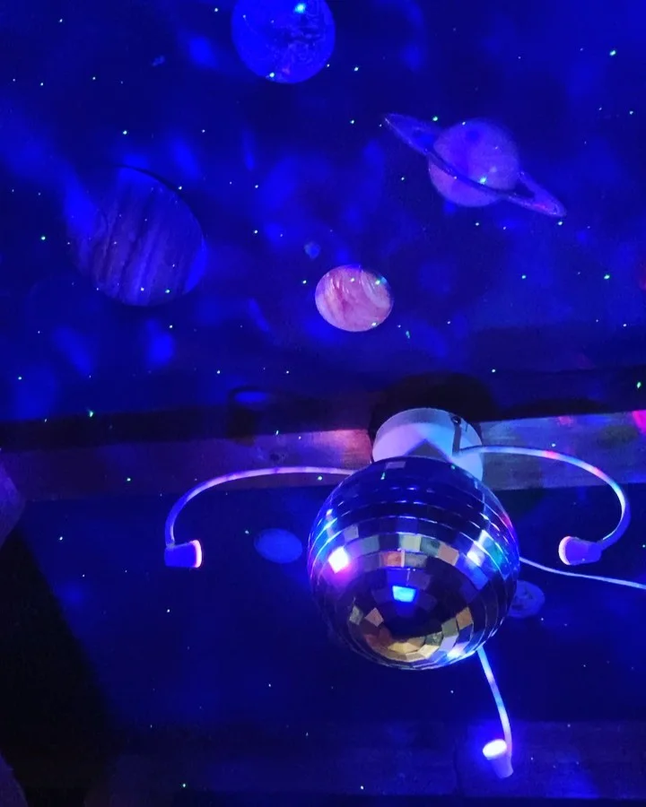

2020年8月19日
みなさん！！

みなさん！！ 最近、宇宙エネルギーを感じる事はありますか？？コロナ禍の中でなかなか忙しく感じれない方が多いんではないでしょうか？ 宇宙はあなたの味方であり、家族です！ ついに当店にも宇宙が見れるようになりました！ コスモの力を感じてください！！ 宇宙ーーーー💫💫💫 💫💫💫 #ネタやからフォロー外さんといてな！ #誕生日来ていただいた方ありがとうございます #ダイソーで惑星ステッカー買って貼っただけや！ #中華バル#中華#中華料理#福島グルメ#路地裏#B級グルメ#中国#チャイニーズ#路地裏チャイニーズ有馬#有馬#シュウマイ#餃子#点心#フォローミー#followme#summer#宇宙#惑星#ピザプラネット